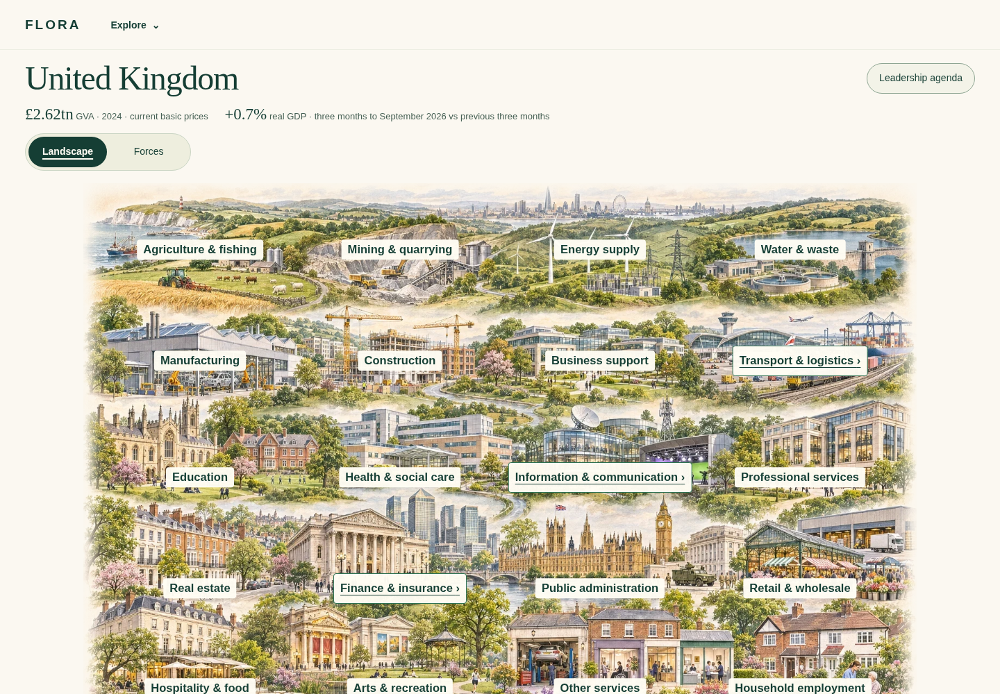
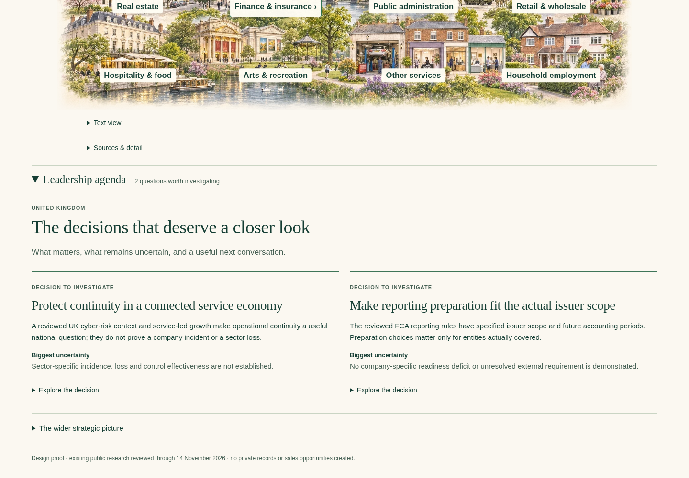
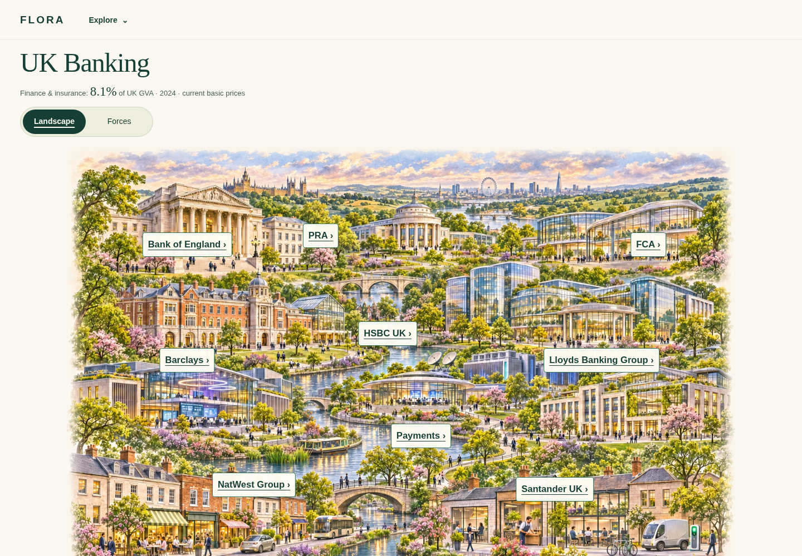
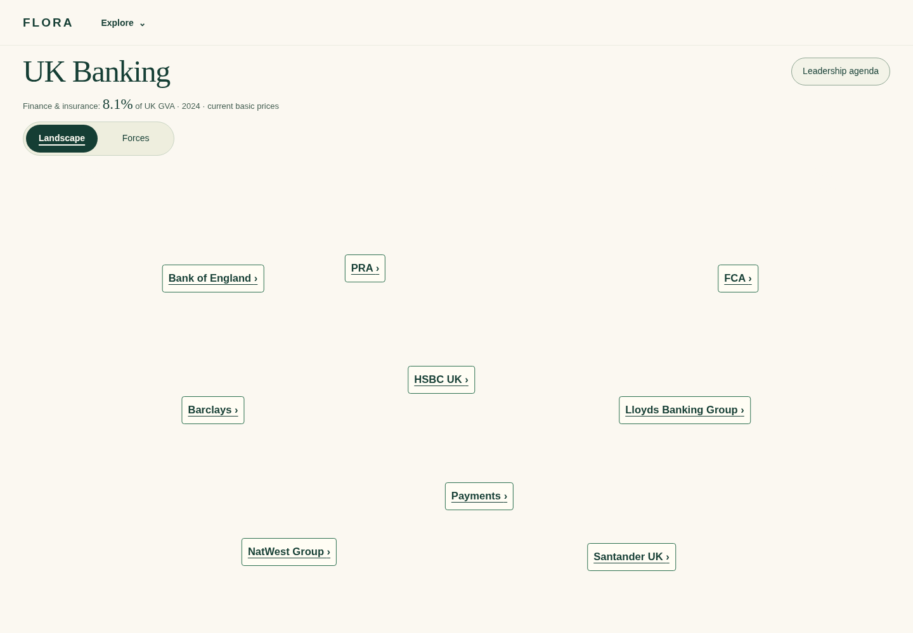
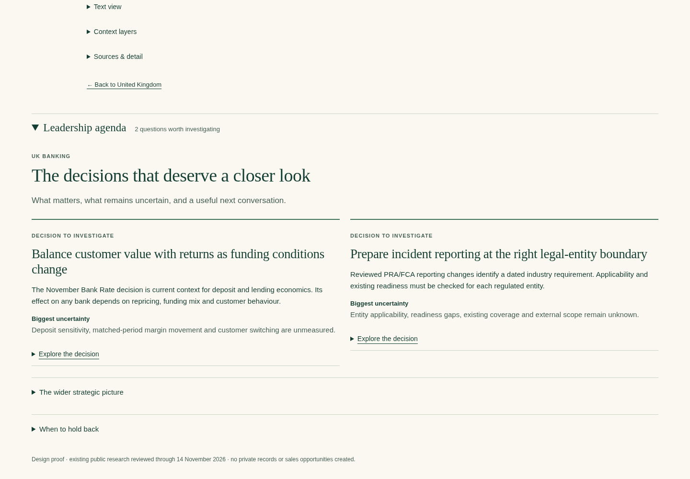
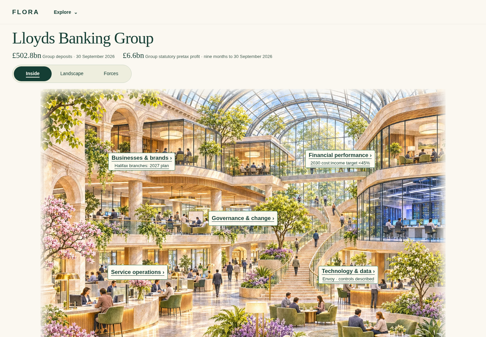
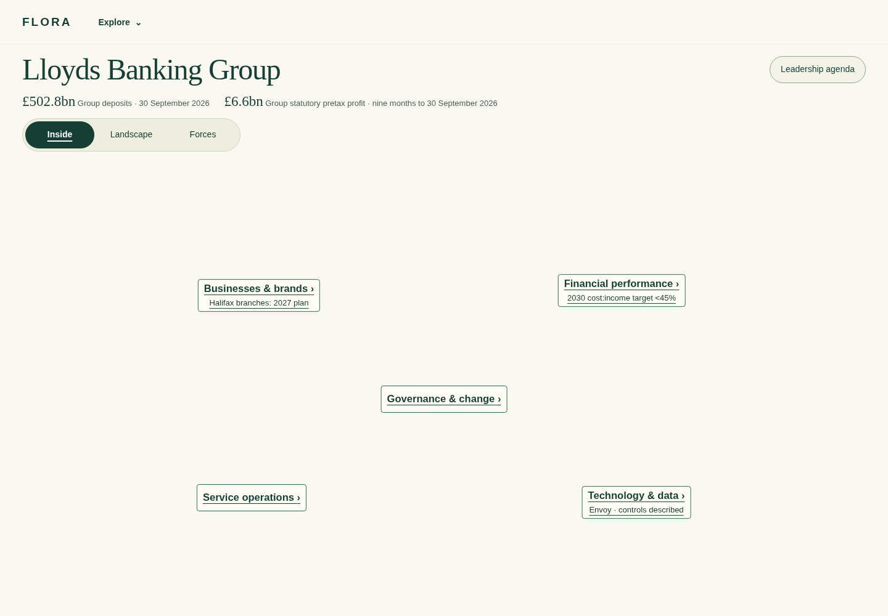
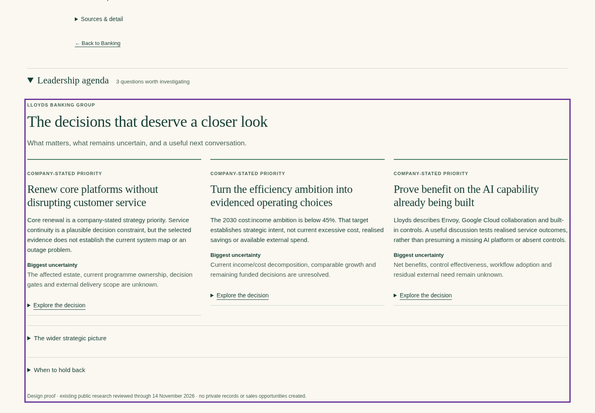

FLORA · strategic insight without replacing the visual journey
Design-only comparison · accepted main fe66516 · unchanged artwork · owner acceptance pending
United Kingdom
Accepted main — beforeSI-1 image view
SI-1 shared agenda
UK Banking
Accepted main — before
SI-1 image view
SI-1 shared agenda
Lloyds Banking Group
Accepted main — before
SI-1 image view
SI-1 shared agenda